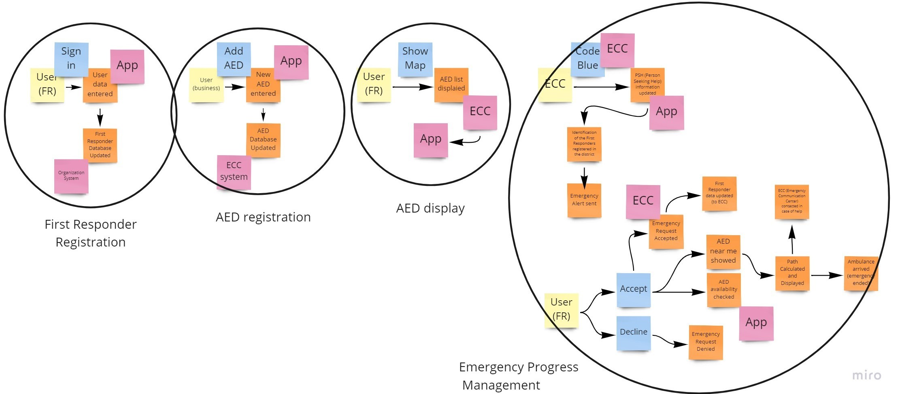
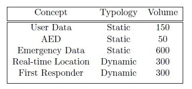

HeartBeat Project
Team Members
- Amaducci Sara: sara.amaducci@studio.unibo.it - 0001024134
- Neri Francesca: francesca.neri26@studio.unibo.it - 0001018826
- Ricci Eleonora: eleonora.ricci13@studio.unibo.it - 0001018800
Our Project
Every year, in Italy, over 150,000 people are victims of sudden cardiac arrest. According to SIPREC (Società Italiana per la Prevenzione Cardiovascolare), the most frequent causes of death in Italy include ischemic heart diseases, cerebrovascular diseases and other heart diseases.
Defibrillating within 3-5 minutes of the onset of cardiac arrest can lead to survival by up to 50-70%. But if no one intervenes, their chances of survival drop 10-12% for every minute that passes.
In the event of a cardiac arrest, early intervention by people present on site, through the first resuscitation maneuvers and the use of semi-automatic defibrillators, can be decisive for the patient's survival.
The project HeartBeat aims at facilitating rapid defibrillation from publicly available Automated External Defibrillators (AED), through the creation of a system with the following functions:
- Register of defibrillators present in the territory
- Integration with the 118 Emergency Communications Center
- Register of the BLSD trained individuals in the region
- Integration and Development of the 118 Management and Cartographic System
- Web portal
- HeartBeat Mobile App
Purpose of the Project
The goal of the project is to minimize the time of intervention in the event of a cardio-respiratory arrest. Defibrillation is the only therapy to trait someone in cardiac arrest and represents one of the key steps in saving a life from sudden cardiac arrest.
The HeartBeat project aims at facilitating rapid intervention from trained individuals while waiting for the ambulance to arrive. This includes the creation of a unique register of defibrillators that stores data homogeneously in the territory.
At the same time, it aims at creating a network of first responders who, after the attainment of a qualifying certificate for the use of a defibrillator, enroll themselves in the register of the BLSD trained individuals and agree to intervene in case of a medical emergency.
Demo of the Project
Domain Exploration ↵
Scope of Work
Scope of Work Overview
This section describes the environment in which this project can be used. The software is designed as an extension of the management software used by the 118 Emergency Communications Centers. This latter allows 118 operators to follow each step related to an emergency request, allowing them to manage the following types of services:
- Emergency / urgent transport;
- Secondary transport;
- Transport by helicopter rescue.
The Emergency Communications Center makes use of advanced technological solutions that guarantee the security of call reception systems, the user's exact location and real-time control of the position of the available emergency vehicles.
The region of Emilia Romagna has 3 Communications Centers , each of which has an advanced telecommunication system for receiving and sorting all requests.
In case of medical emergency, it is of primary importance the obtainment of the exact localization of the event together with an immediate evaluation of the urgency level of the call.
The staff at the time of answering:
- Locates the event, using a dedicated management software equipped with an advanced cartographic module;
- Evaluates the severity of the event and assigns a priority to the request with a color code;
- Sends an emergency vehicle that is suitable for the emergency;
- Coordinates the development of the rescue intervention, identifying hospital facilities that are suitable for the rescued patients;
Once on site, the personnel sent proceeds to assess the injured person and, after the stabilization and first aid maneuvers, contact the communications center to transmit the patient's data, the situation encountered and to obtain information regarding the hospital to which possibly go.
Work Context Diagram
The context diagram showed below outlines how external entities interact with the software system.

Stakeholders and Actors
The HeartBeat project is not designed for a specific market share, but it concerns the well-being of the entire territorial community.

First responders represent the core identity of the software, so users can be considered as the main actors of the software system.
We can identify two main macro-categories of users, which are not mutually exclusive:
On one hand, people who obtained a qualifying certificate for the use of a defibrillator - and therefore know the maneuvers to implement in the event of cardiac arrest - belong to the network of first responders.
On the other hand, business owners who install an AED in the building and register it through the application, have a fundamental role in implementing the network of publicly available defibrillators.
As we said before, being part of one category does not exclude the other one: a user who registers a new AED and is trained to use it, is also a first responder.
Ubiquitous Language
AED
Automated External Defibrillator, it is a portable electronic device that automatically diagnoses the life-threatening cardiac arrhythmias of ventricular fibrillation (VF) and pulseless ventricular tachycardia, and is able to treat them through defibrillation, allowing the heart to re-establish an effective rhythm.
AED Availability
List of AED that are located in public or private structures, which can be not available during the closing hours.
AED Database
AEDs must be stored indicating the precise location (expressed using geographical coordinates), the name of the place and all the information regarding their availability.
Code Blue
Code assigned to the emergency by the ECC operator indicating that the patient has compromised vital functions in an out-of-hospital environment (usually assigned in case of cardiac or respiratory arrest).
ECC
Emergency Communication Center, it is a fundamental structure for the management of territorial emergencies and is the answer to every individual's request for help.
Emergency Alert
A warning notification sent by the Emergency Communication Center.
Emergency Request
It is the notification that is sent to all the devices of the first responders who are located in a determined area, which can be accepted or refused.
First Responder
Person with specialized training who downloaded the application.
PSH
Person Seeking Help, a person asking or receiving help due to a sudden heart attack.
Ended: Domain Exploration
System Use Cases ↵
Analysis of Subdomains
In this section we will describe in more specific and precise detail the steps that the system takes in the course of its functioning.

After the event storming phase, three main basic subdomains have been identified:
- Emergency Progress Management (core)
- User Account Management (generic)
- AED Database Management (supporting)
To facilitate our understanding, we decomposed the domain into subdomains. In this way, we are able to separate what in fact generates value, and thus, we can analyze more in dept all the aspects of the specific subdomains.
We identified the Emergency Progress Management as the core subdomain as it represents the activity that is uniquely performed by the system.
Then, the User Account Management constitutes the generic subdomain as it does not generate competitive advantage and it does not distinguish the system in the market.
And finally, the AED Database Management supports the system in performing its main functions.
HeartBeat System Use Cases

In this section we will analyze more in details each use case identified in the HeartBeat system.
-
Emergency Signalling
- Primary actor: Emergency Communications System
- Scope: Send the emergency notification to First Responders
- Scenario: somebody calls the 118 for a medical emergency regarding a cardiac arrest
It all starts when the '118' emergency number is called for a victim of cardio-respiratory arrest. As soon as the operator has verified that the emergency regards a cardio-respiratory arrest, he/she assigns the code blue to it.
The assignment of the code blue to an emergency triggers the emergency management system, which receives the data about the emergency and starts searching for suitable First Responders.
First responders are selected according to two variables:
- If the geo-location on the mobile phone is active, First Responder located within 1 km from the emergency site, will be notified.
- If the geo-location on the mobile phone if switched off, First Responders will be notified according to the municipality selected during the registration.
This use case terminates when suitable First Responders receive the emergency alert.
-
View Current AED
- Primary actor: Emergency Communications System & User / First Responder
- Scope: Visualize AEDs on the map and display information
- Scenario: Users want to see AEDs located near them in a specific moment
When a user wants to see AEDs displayed on the map, the system will detect the device location,and will display AEDs located in the area of 1 km from the user.
The distance of 1km is set as default but users can zoom in/out the map to limit/extend the research. In the case in which the users' location is not available, the system will display AEDs according to the municipality selected at the time registration.
Each AED stored in the database has a profile containing all the relevant information, including the address, the reference point and available hours. Once the user selects a specific defibrillator, the system will display these data.
-
Update AED
- Primary actor: Emergency Communication System & User / First Responder
- Scope: New AED is inserted in the system
- Scenario: A new AED is inserted in the system by the Emergency Communication System or a user
When a user or the Emergency Communication System wants to register a new AED, he/she will need to fill out the registration form with the following data:
- Name of the place (reference point)
- Address
- Location (coordinates)
- Additional information about the location [optional]
- Availability (month - days - hours)
- Picture [optional]
Then, once the form has been submitted, the system confirms the registration of the new AED and updates the ECC database with the new information.
Extension: Registration may fail due to invalid or missing data. If this happens, the user will have to re-enter the data and wait for confirmation.
-
Emergency Management
- Primary actor: First Responder
- Scope: Accept / Decline the emergency alert
- Scenario: A First Responders receives an emergency alert and either accepts or declines it
When a first responder receives a help request, he/she clicks on the notification, which will automatically open the application and turn the geo-location on.
The First Responder can accept, decline or ignore the alert. Once the First Responders has accepted the request, the system will send a confirmation to the Emergency Communications Center, which will see the responder's movements in real-time.
At the same time, the system will display the emergency details to the first responders who accepted the request, which are respectively:
- Time of alert
- Reference point
- Address
- Ambulance ETA
-
Registration
- Primary actor: First Responders
- Scope: new users join the application
- Scenario: a user that has obtained a BLSD certificate wants to subscribe to the application creating their profile
After having downloaded the application, users will fill a registration form with the following data:
- Name and Surname
- Email [to be confirmed]
- Telephone
- Municipality (if the geo-localization is not active, the emergency alert will be sent according to the municipality selected)
- BLSD certificate (emission body)
- Date of emission
- Period of validity
- Tax code
- Picture [optional]
At the time of registration, users will also have to authorize the access to location (when using the app), as well as confirm the terms and conditions of the application.
Once users have submitted the form, they will wait for confirmation to be sent by the system.
Extension: Registration may fail due to invalid or missing data. If this happens, the user will have to re-enter the data and wait for confirmation.
-
Update Certificate
- Primary Actor: First Responder
- Scope: update an expired certificate in order to be able to intervene in case of emergency
- Scenario: the BLSD certificate will expire within a one-month period
The system will automatically calculate the date of expiry and, one month before, it will notify the user to update the certificate.
Users can update their certificate at any time by updating their profile.
Extension: Updating may fail due to invalid or missing data. If this happens, the user will have to re-enter the data and wait for confirmation.
Ended: System Use Cases
Software Requirements ↵
Performance Requirements
Performance requirements define how well the software system accomplishes certain functions under specific conditions. To assess the performance of the system, we analyzed the following characteristics: response time, workload and scalability.
Response Time
The response time refers to the time employed to execute and complete specific tasks. Considering the environment in which HeartBeat operates, speed of execution is a crucial aspect: The goal of the software is to minimize the time of intervention in case of cardiac arrest, so, it is essential for the micro-services to communicate rapidly with each others and with the user app.
Workload
To assess the workload, we built a table of volumes to estimate data volumes and usage frequency of the databases of the system. In the table showed below, we estimated the volume of data flowing to the database systems, in the region of Emilia Romagna, every month.

As we can see, around 150 new users download the application and enroll themselves to the register of first responders.
Then, we estimated around 50 new AED added each month to the regional register of defibrillators, which would imply updating both the ECC official list and the HeartBeat database.
Emergency data refers to the data that are shared by the Emergency Communications Center every time a ’code blue’ is recorded. Keeping in mind that around 150.000 people are victim of sudden heart attack every year, we estimated around 600 emergencies in the area of Emilia Romagna every month.
Finally, first responder refers to the recording of the data of users who accepted the emergency alert, while real-time location concerns the recording of their coordinates. The frequency of these two entities is the same and we estimated that given 600 sudden cardiac arrest, HeartBeat would successfully identify suitable first responders and AED 50% of the times.
Scalability
Scalability refers to the ability of the software to handle increased workloads with minimal cost impact. In this case, keeping in mind that Heart- Beat operates on a regional level, data should flow at a constant rate.
Of course, in case of expansion, the system would have to deal with increased workload and scalability issues. However, for what concerns performance requirements, the most important one regards the speed of execution.
Dependability Requirements
The dependability of a system reflects the user’s degree of trust in that system. It reflects the extent of the user’s confidence that it will operate as users expect and that it will not ’fail’ in normal use.
Dependability covers the related systems attributes of availability, reliability, security, integrity and maintainability.
Availability
Availability refers to the percentage of time that the infrastructure, system, or solution remains operational under normal circumstances in order to serve its intended purpose. For HeartBeat, availability is a key aspect as sudden cardiac arrests are unpredictable and can happen any time. This is the reason why the system must be always running properly; a service downtime could lead to tragic outcomes.
Reliability
Reliability refers to the probability that the system will meet certain performance standards in yielding correct output for a desired time duration. Also here, it is important for the system to keep running accurately in time, minimizing failures and delivering services as expected by users.
For example, in the event of an emergency, users expect the data about the AED location to be precise and accurately displayed through the mapping system. At the same time, it is important for the Emergency Communications Center to receive real-time movements of first responders to collect relevant information about the time of intervention.
Security
Software security is the concept of implementing mechanisms in the construction of security to help it remain functional (or resistant) to attacks. This means that a piece of software undergoes software security testing before going to market to check its ability to withstand malicious attacks. Security is a key aspect for HeartBeat as it is important to prevent attacks that jeopardize systems’ availability and reliability. Moreover, the system deals with sensitive information which must be protected from potential attackers.
Integrity
With system integrity, we include the attributes that we have analyzed so far. Software integrity refers to the quality of the software’s source code, which is essentially a measure of how safe, secure, and reliable it is. Code quality is directly related to higher security and protection against threats, but also to the maintainability and testability of the code. All of these factors play an important role in the software development, and ultimately contribute to the implementation of a better system.
Maintainability
Maintainability represents the degree of effectiveness and efficiency with which a product or system can be modified by the intended maintainers. The Maintainability of an application is a combination of compliance with good coding practices, the homogeneity with which coding rules are applied across an application, and compliance with architectural rules. Since software is not static, the ability of a software to evolve and change is of key importance in today’s agile environment.
Ended: Software Requirements
System Design ↵
Software Architecture
Software architecture is, simply, the organization of the system. This organization includes all components, how they interact with each other, the environment in which they operate, and the principles used to design the software.
We can classify all these elements in three categories:
- Database System
- Front-End Technologies
- Back-End Technologies
In this section we will explore each micro-service that composes the system, focusing on the relationships among the components and analyzing how they interact with each other.
Database System
In our project, the implementation of multiple databases is essential to collect and manage data in a systematic way.
First, all the information regarding users must be stored and updated in case of changes. Users’ data, identified by a user ID, will be automatically accessed by the system through SQL queries as soon as they are needed for the emergency progress system.
Then, the registered AEDs must be stored indicating the precise location (expressed using geographical coordinates), the name of the place and all the information regarding their availability.
Finally, data about the emergency will be stored in a database that is connected to the emergency micro-service. The system will attribute an ID to each emergency and will store the following data:
- Coordinates of the emergency.
- List of first responders who received the alert (specifying whether they accepted or declined it).
- List of AEDs located near the emergency.
Back-End Development
The back-end refers to the parts of the application that allow it to operate and that cannot be accessed by users.
We identified three micro-services that communicate with each other and with the mobile application through REST APIs.
Account Service
The first micro-service regards all the operations concerning users’ accounts. More in details, the tasks performed by the account-service include:
- Communication with the accounts’ database through SQL queries to insert, update and delete accounts.
- Identification of the suitable first responders on the basis of the location of the emergency.
- Creation and management of the notification alerts sent to users.
AED Service
Then, the operations regarding AEDs locations are in charge of the AED-service. In particular, the tasks performed by this micro-service include:
- Communication with the AEDs’ database through SQL queries to insert, update and delete AEDs.
- Identification of the AEDs located near the emergency.
Emergency Service
The last micro-service that is part of the back-end development is the emergency-service. This service communicates with the other two services through REST APIs, as we saw in the example above, and with the emergency database with SQL queries. The tasks performed by the emergency-service, include:
- Elaboration of the data received by the Emergency Communications Center and emergency database update.
- Sharing of the emergency data to the other micro-services and the user app.
- Sharing with the Emergency Communications Center of the data about first responders who accepted the alert.
API Design between account-service and AED service
app.get("/", (req, res) => {
res.send("This is an API between users and AED locations")
})
app.get('/users', (req, res) => {
let dto = []
for(user of userModel.getAllUsers()){
let userDto = convertToUserDto(user)
dto.push(userDto)
}
res.json(dto)
})
app.get('/emergencies', (req, res) => {
let dto = []
for(emergency of emergencyModel.getAllEmergencies()){
let emergencyDto = convertToEmergencyDto(emergency)
dto.push(emergencyDto)
}
res.json(dto)
})
app.post("/users", (req, res) => {
try {
userModel.registerNewUser(req.body.userId, req.body.name, req.body.city)
res.json(userModel.getUserById(req.body.userId))
} catch (error){
res.status(400).json({ error });
}
})
app.get('/locations', (req, res) => {
res.json(locations)
})
app.get('/locations/:id/users', (req, res) => {
let dto = userModel
.getAllUsers()
.filter(u => u.locations.includes(req.params.id))
.map(convertToUserDto)
res.json(dto)
})
The code block showed above displays the design of some APIs that perform the following functions:
- Read data about users
- Add new users
- Read data about the emergency
- Read data about AED locations
- Read data about AED locations based on the location of first responders
Front-End Development
Front-end development refers to the client side of the system with which users can interact directly. For HeartBeat, users have at disposal both a mobile app and a web portal:
The mobile app represents the main interface for users as some operations need direct access to active localization, camera or the calling system. While the web portal only constitutes an alternative means by which users can update their profiles.
The user app communicates with the micro-services through REST APIs in order to transfer data from users to services and vice versa. In particular, its tasks include:
- Users’ data entry and update.
- AEDs’ data entry and update.
- Display of the notification alert and sharing of the data of users who accept it.
- Display of AEDs and communication with the mapping platform.
Emergency Communication Center Functioning
This section explains more in details the role that the Emergency Communications System has in triggering the HeartBeat emergency system.
As we saw before, the emergency management system is triggered by the assignment of the code blue to an emergency. This code is manually assigned by the ECC operator once he/she obtained all the relevant information about the emergency.
When this happens, the HeartBeat emergency management system will receive the following data:
[
{
"emergencyId": "0001",
"time": "15:36",
"latitude": "67",
"longitude": "20",
"reference": "Bank"
}
]
The position, expressed with coordinates, will be used by the system to identify First Resopnders thar located nearby the emergency site.
This simple python program simulates this process and produces the following output:
Ended: System Design
Conclusions
Working on this project proved to be a great challenge for us, especially because of our non-technical academic background. We found it difficult to remain coherent along all the process of design and trying to integrate all the notions from the course was not easy.
During the planning phase, we found it very useful to conduct an event storming session, which allowed us to develop a common knowledge and understanding of the business domain.
Along the way, we encountered some difficulties related to the business domain specifically but fortunately, we could rely on the opinion of some domain experts who work in the emergency sector. Indeed, we were able to take some relevant decisions about the design of the system thanks to their expertise.
Also, tracking the project using GitHub was quite hard initially as we approached it at a technical level for the first time. On the other hand, we had the possibility to explore the potential of GitHub to store, manage and track projects, both developed individually and in team. Overall, we agree on the added value that this project gave us, allowing us to see in practice the importance of the techniques studied during the course, by applying them in a real world scenario.
Domain Driven Design
Concerning the Domain Driven Design, we started with a long planning session in which we tried to pin down all the concepts to have a clear holistic view of the whole system. After having identified the domain, we were able to map the context of work, identifying all the entities involved in the system.
The design of bounded contexts was identified as the most challenging aspect of DDD, whilst the analysis process carried out with the tools and the philosophy transmitted during the course felt quite natural and effective since the beginning. Furthermore, developing a ubiquitous language for the project turned out to be extremely useful to align the team and provide a common under- standing
DevOps
To implement DevOps in our project, the first step to undertake regards the effective integration of people, processes, and tools to obtain a single entity. The purpose is to encourage collaboration and align IT goals with business strategy.
Then, it is essential to adopt an end-user-centric process to deliver a service that exceeds users' expectations regarding time, functionality, and performance. In this regard, DevOps aims at achieving efficiency by leveraging end-users feedback for constant improvement.
A key practice used in DevOps is automation: through automation, it is possible to save valuable resources in terms of cost, time, and efforts of developers and testers.Continuous integration is the key to a successful DevOps strategy. It enables developers to build software in small, regular steps by immediately identifying defects and rendering feedback.
Future Improvements
After having discussed in group about potential future improvements, we identified two features that could enhance the user experience:
- Gamification
- Emergency Progress Status
Gamification refers to the application of game-design elements, in non-gaming contexts, to educate, entertain and engage users. Here, the idea would be to introduce gamification elements to stimulate learning and training experiences towards health, first aid and emergencies' management.
The Emergency Progress Status, on the other hand, regards an additional feature which allows first responders receiving the help request to see the status of the emergency. More in details, they would be able to see the number of people who accept the request, their movements in the map and they would have the possibility to contact them.